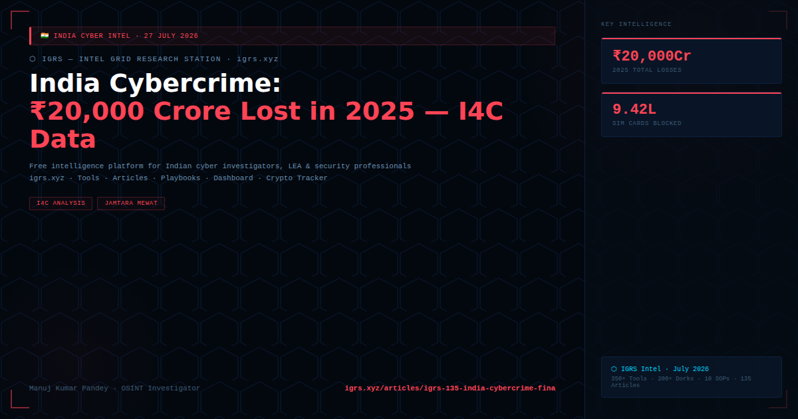

India's cybercrime financial losses crossed ₹20,000 crore in 2025 — a staggering figure that surpasses the budgets of multiple Indian states' police departments combined. I4C data, CERT-In incident statistics, and state police cybercrime reports paint a comprehensive picture of India's worsening cyber fraud epidemic — dominated by investment fraud, UPI scams, digital arrest, and fake stock trading platforms.
| Category | Estimated Loss | Primary States |
|---|---|---|
| Investment/stock fraud | Largest category | Maharashtra, Gujarat, Delhi, Karnataka |
| UPI/payment fraud | High volume, lower per-incident | All states — UP, Bihar, Haryana highest |
| Digital arrest scams | ₹3,000+ crore | Metro cities — Delhi, Mumbai, Bengaluru |
| Fake job fraud | Growing | UP, Bihar, Jharkhand, Rajasthan |
| Crypto fraud | Significant | Gujarat, Maharashtra, Karnataka |
| SIM swap/banking | Significant | Rajasthan (Mewat/Nuh corridor), Jharkhand (Jamtara) |
| Region | Speciality |
|---|---|
| Jamtara, Jharkhand | OG cyber fraud capital — phishing, SIM fraud, OTP theft |
| Nuh/Mewat (Haryana/Rajasthan) | SIM swap, fake job, bank fraud — "North India's Jamtara" |
| Bharatpur, Rajasthan | Cyber fraud networks, mule account supply chains |
| Thane/Mumbai periphery | Investment fraud, fake stock platforms, WhatsApp group scams |
| Bengaluru | Tech-enabled fraud — job scams, cryptocurrency fraud |
| Tool/Platform | Function |
|---|---|
| 1930 helpline | First-response cyber fraud reporting — 24x7 |
| cybercrime.gov.in | Online complaint portal — NCRP |
| CFCFRMS | Emergency fund freeze — 24-hour window critical |
| Pratibimb | Criminal location mapping for state police |
| Samanvaya | Interstate crime linkage analytics platform |
I4C projection: Annual cybercrime losses projected at ₹1.2 lakh crore for 2025 (MHA/I4C data). 9.42 lakh SIM cards blocked for cybercrime links. The scale makes cybercrime India's largest property crime category — larger than physical theft, robbery, and fraud combined.
Progress: Pratibimb has enabled 6,046 arrests. I4C's 24-hour freeze mechanism has prevented significant losses. Cooperation with tech platforms (Microsoft-Skype, Meta-WhatsApp) is scaling. But the fraud ecosystem grows faster than the response capability.